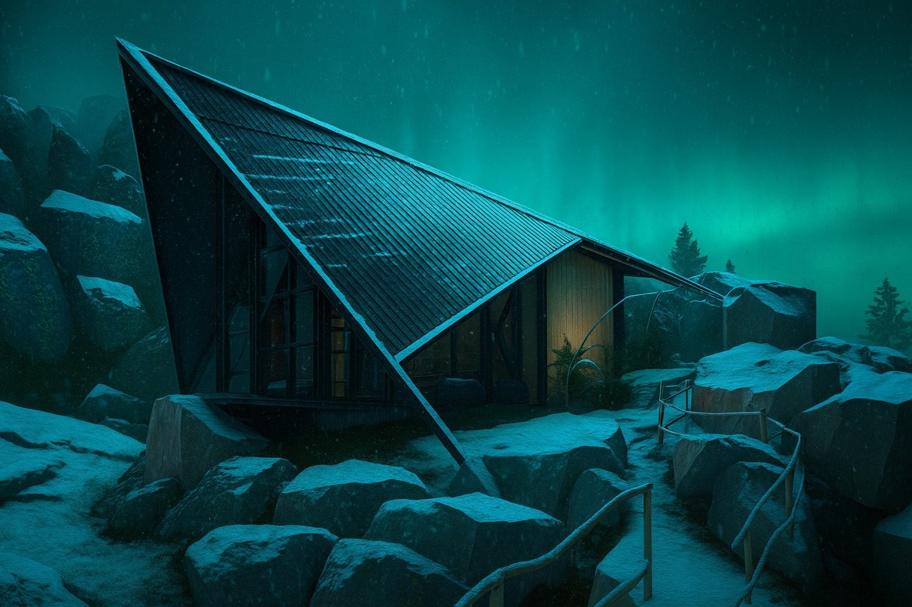
SPEAR,
ARROW,
LIGHT.
Ullr Tengri is a symbolic bridge between Turkic and Norse mythologies — an architectural narrative forged through triangular forms and sacred geometry. Anchored into the steep face of a rugged mountain, the 40 m² single-room structure recalls the divine weapons of the Norse warrior gods.
Its tension-based supports, driven deep into the rock, echo the certainty of Odin's spear Gungnir. The sharply ascending, arrow-like roof evokes Ullr's arrow in flight while reaching toward Umay Ana, the Turkic goddess of the sky — held in balance against the earthbound gravity of Erlik Han below.
Steel cables and tensile members span the façade as a rhythmic, shield-like skin: protective like Ullr's warrior spirit, enclosing like Umay's nurturing essence. Not merely a building, but a threshold where spear, arrow and light converge.
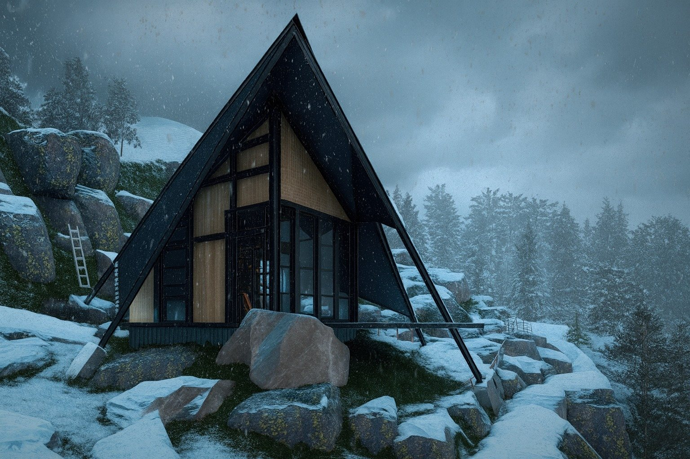
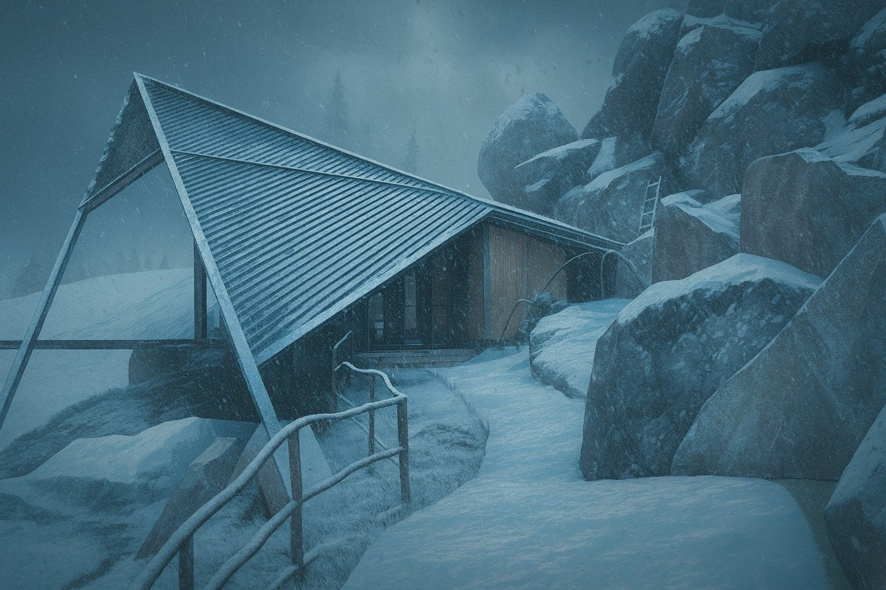
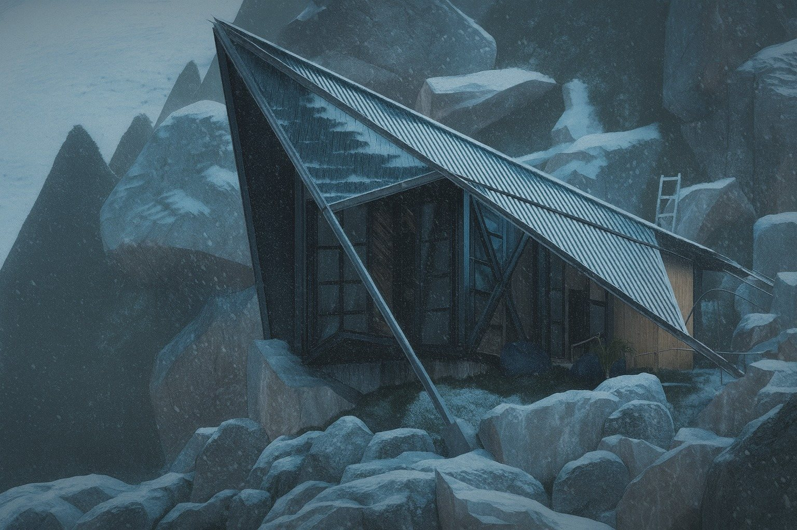
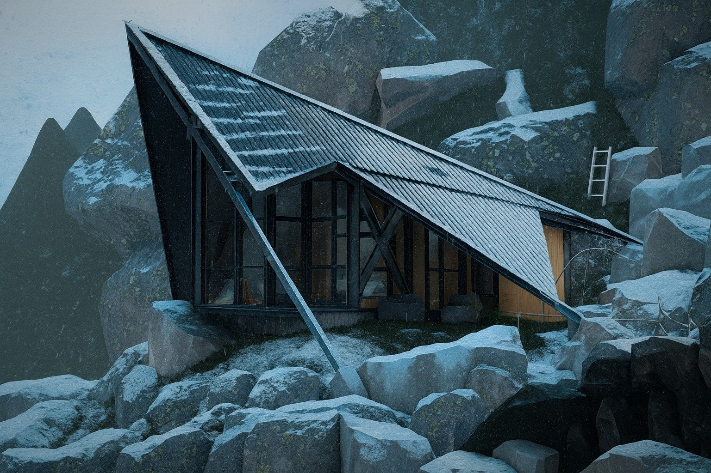
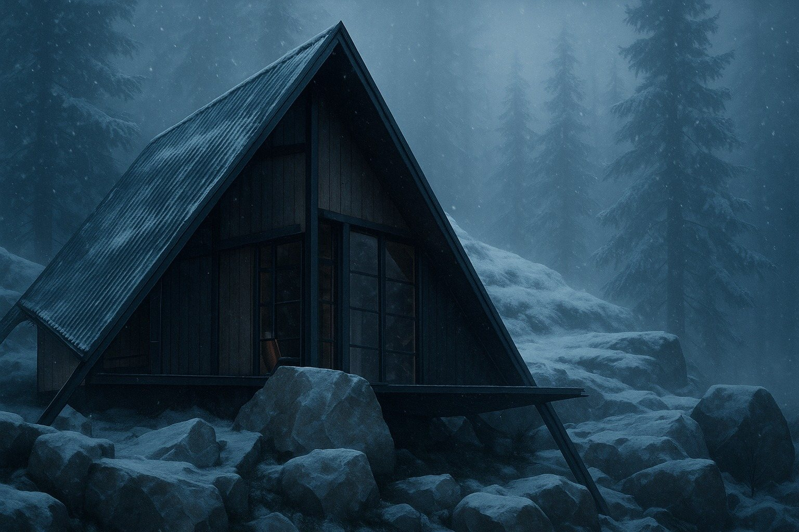
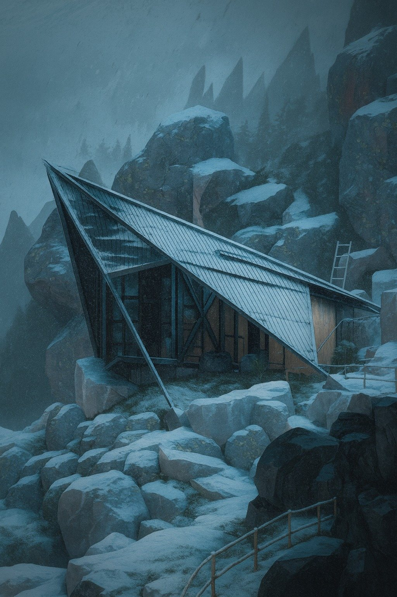
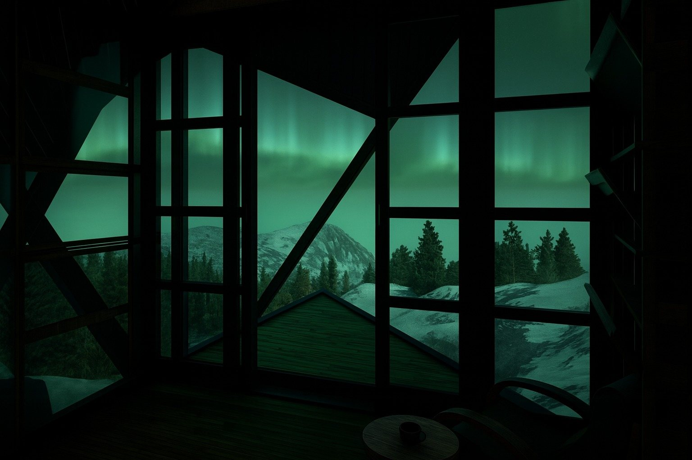
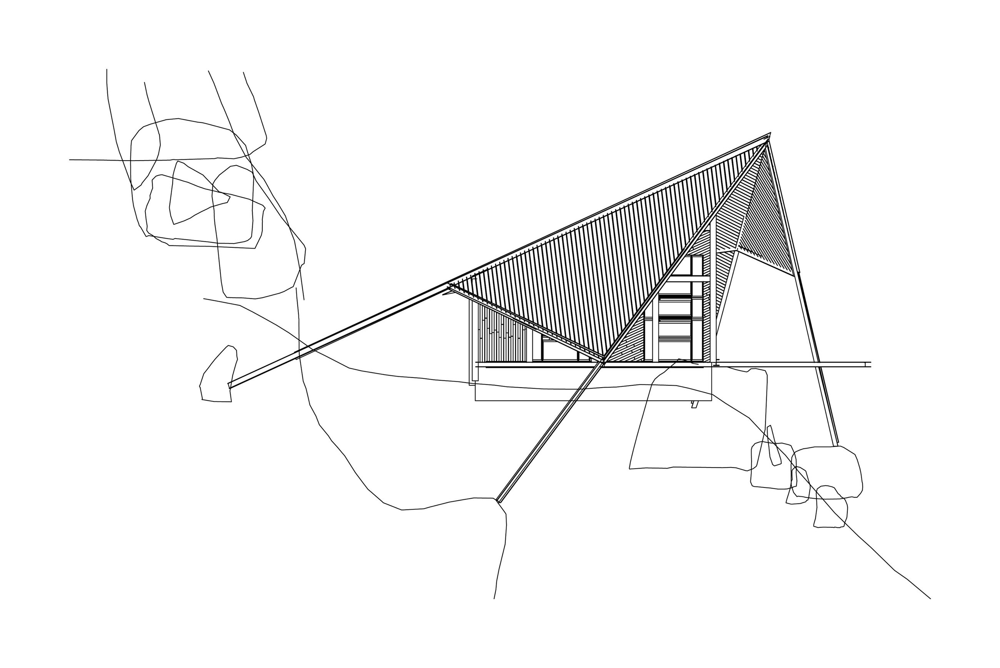
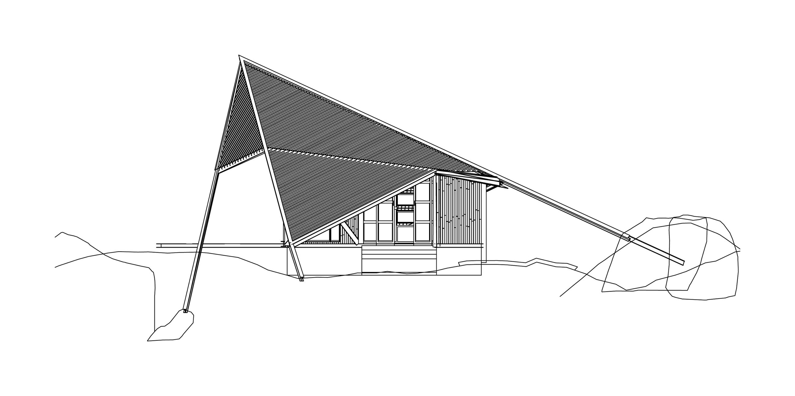
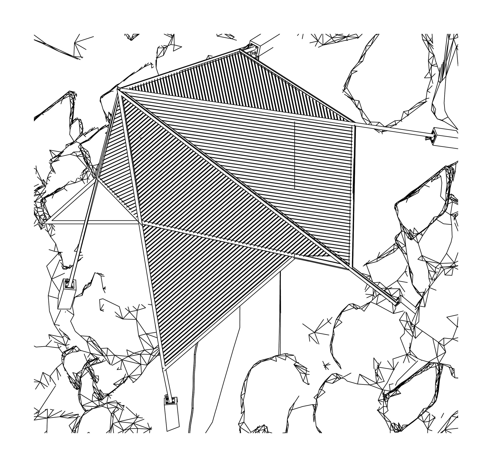